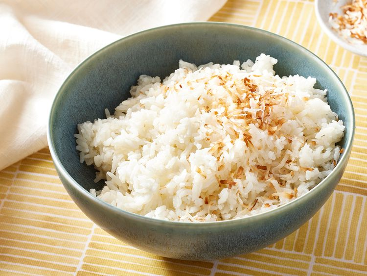

Home
Sweet Coconut Rice

Description of the recipe:
A delicious coconut rice that can be thrown in a rice cooker or made on the stove. This is great when paired with a Thai
curry or stir-fry! Ideally, make this with either jasmine rice or long-grain white rice.
Ingredients
- 1 ½ cups long-grain white rice
- 1 (14 ounce) can coconut milk
- 1 ¼ cups water
- 1 teaspoon white sugar, or more to taste
- 1 tablespoon shredded coconut, or to taste (Optional)
Steps
- Gather all ingredients.
- Stir rice, coconut milk, and water together in a saucepan. Dissolve sugar into the liquid.
- Bring the mixture to a simmer then reduce heat to medium-low. Cover the saucepan and simmer until the majority of the liquid has been absorbed by the rice, 15 to 20 minutes.
- Leaving the saucepan on the burner, turn the heat off and let rice steam until sticky, 5 to 10 minutes more.
- Garnish with shredded coconut.